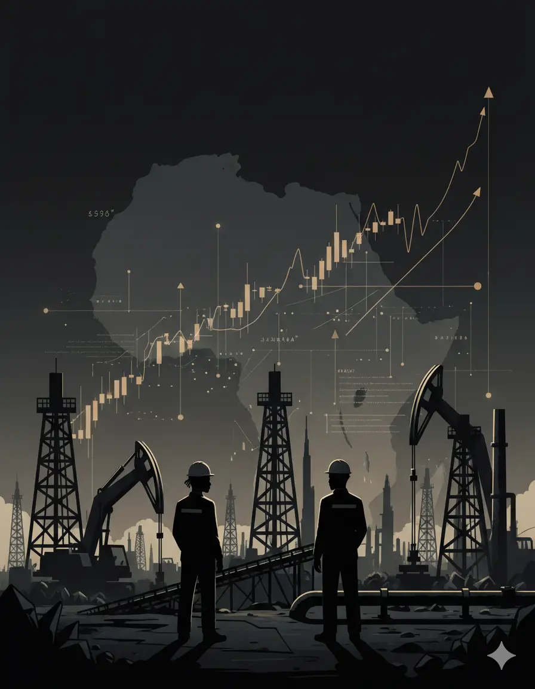

Comparative & Macroeconomic Policy
This study examines the policy and regulatory frameworks of extractive industries in resource-dependent African countries, focusing on the Democratic Republic of Congo, Ghana, Mozambique, Sierra Leone, and Zambia. It assesses the extent to which extractive sector revenues contribute to inclusive economic growth, employment generation, and social transformation.
The analysis is based on the premise that effective management of extractive resources—particularly minerals and hydrocarbons—can serve as a catalyst for poverty reduction, job creation, and development systems strengthening. However, achieving these outcomes requires deliberate policy reforms and integration of extractive sector revenues into broader economic structures.
Drawing comparative insights from countries such as Bolivia, Chile, Indonesia, and Malaysia, the study identifies policy strategies for leveraging extractive wealth to promote economic diversification, industrialization, and labour market development. It highlights the importance of strengthening fiscal regimes, expanding social protection systems, and investing in infrastructure and human capital.
The study concludes that extractive industries can support inclusive and job-rich growth in Africa, provided that governance frameworks, institutional capacity, and policy coordination mechanisms are effectively strengthened.
This report is designed primarily for:
The study employs a mixed research methodology combining quantitative and qualitative analysis. It relies primarily on a comprehensive desk review of policy documents, macroeconomic data, and academic literature related to extractive industries and development outcomes. This documentary analysis is supplemented with interviews and expert consultations to validate findings and provide contextual insights. The analytical framework centers on the concept of economic linkages—particularly fiscal, backward, forward, and consumption linkages—to evaluate how extractive industries can stimulate broader economic activities and employment generation. Comparative case studies of African and non-African countries are also used to identify policy lessons and best practices.
The analytical approach includes:
This framework enables a structured understanding of how extractive industries interact with employment systems, policy frameworks, and inclusive growth outcomes.

Extractive Economies
Employment Policy
Inclusive Growth
Development Systems
Macroeconomic management
Economic diversification
Fiscal Policy
Taxation
Revenue Administration
Small-Scale Mining
Explore related work on employment policy and labour market systems advisory


.webp)